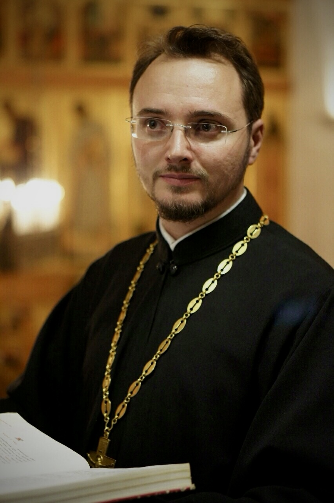
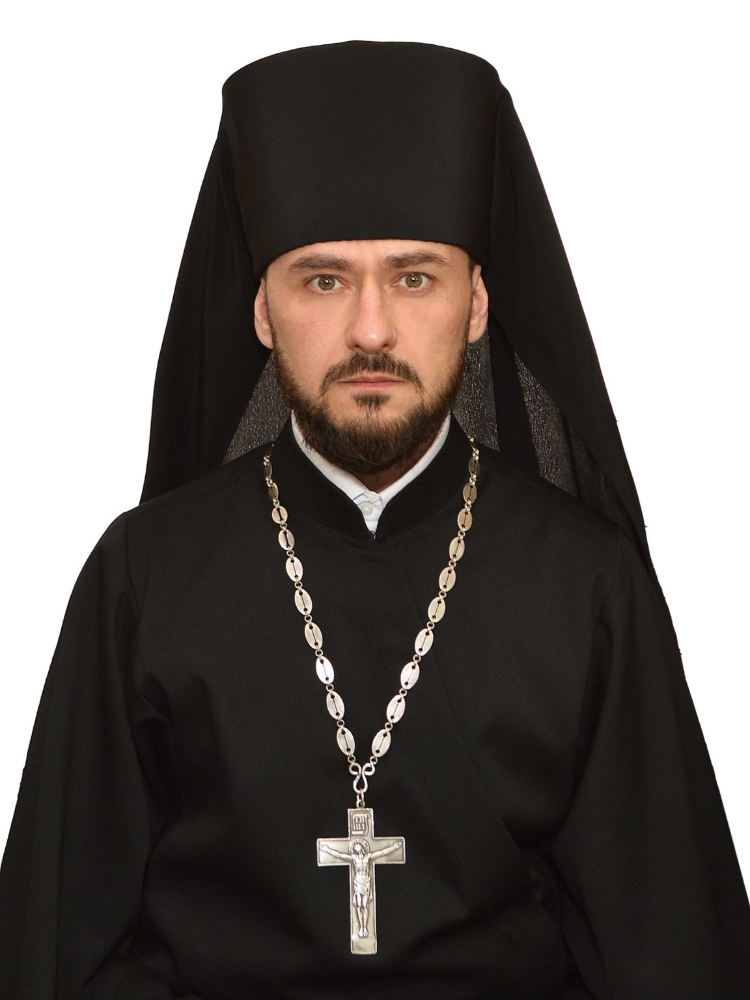
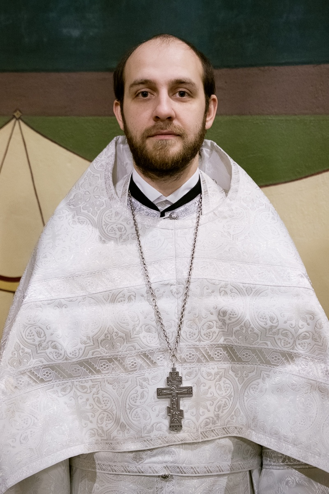
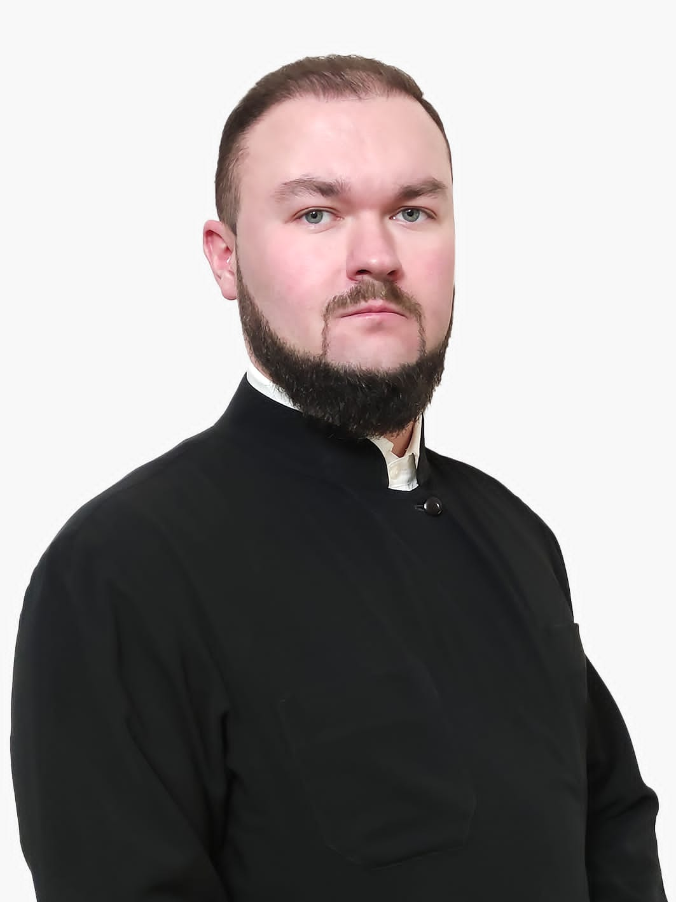
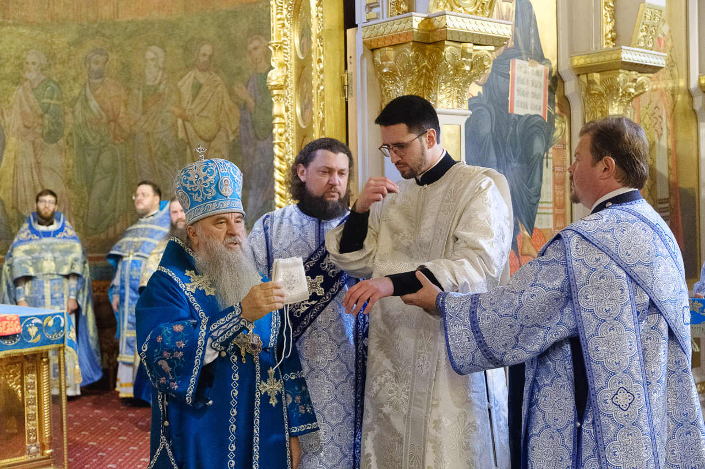
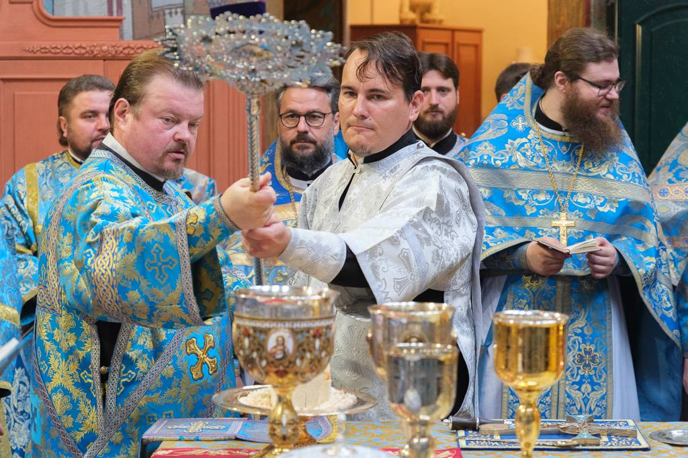

О храме
Приход православного храма во имя святых мучеников младенцев Вифлеемских был создан в июне 2007 года по благословению Митрополита Санкт-Петербургского и Ладожского Владимира. Храм посвящён невинным детям, убитым по приказу царя Ирода, которые стали первыми мучениками за Христа.
История строительства
В феврале 2012 года началось строительство временной часовни-храма на месте будущего храмового комплекса. В Великий Праздник Пасхи здесь состоялась первая Божественная Литургия. Строительство малого деревянного храма в традиционном русском стиле началось в январе 2015 года. Проект разработала прихожанка Ольга Павленкова.
12 марта 2016 года на храме был установлен центральный купол с крестом, а 1 мая 2016 года, в праздник Светлого Христова Воскресения, настоятель храма иерей Максим Устименко совершил первую праздничную Пасхальную Литургию в новом храме. С тех пор церковь стала важным духовным центром для жителей посёлка Торфяное и окрестностей.
В настоящее время на территории храмового комплекса продолжается строительство. В перспективе здесь разместятся воскресная школа, детский центр и сквер для отдыха детей и их родителей.
Святыни и святые покровители
Главные святые покровители храма — святые мученики младенцы Вифлеемские. Их память совершается 11 января (29 декабря по старому стилю). Эти младенцы приняли мученическую смерть за Христа, и к ним верующие обращаются с молитвами о детях, о семейном благополучии и о даровании чад.
В храме регулярно совершается молебен святым мученикам младенцам Вифлеемским, особенно по окончании воскресной Божественной Литургии. Приход активно занимается духовно-просветительской и социальной деятельностью, помогая семьям и детям.
Престольный праздник
Престольный праздник храма отмечается 11 января — в день памяти святых мучеников младенцев Вифлеемских. В этот день совершается торжественная Божественная Литургия и праздничный молебен.
Духовенство

Иерей Максим Викторович Устименко
Настоятель храма
с 20.02.2016

Иеромонах Матфей Шаров
Священник храма
с 10.06.2014

Иерей Василий Алексеевич Лесняк
Священник храма
с 15.02.2020

Иерей Иоанн (Имант) Эвалдович Вериго
Клирик храма
с 28.07.2022

Диакон Арсений Владимирович Гревцев
Рукоположен
14.10.2023

Диакон Вадим Щанкин
Рукоположен
31.08.2025